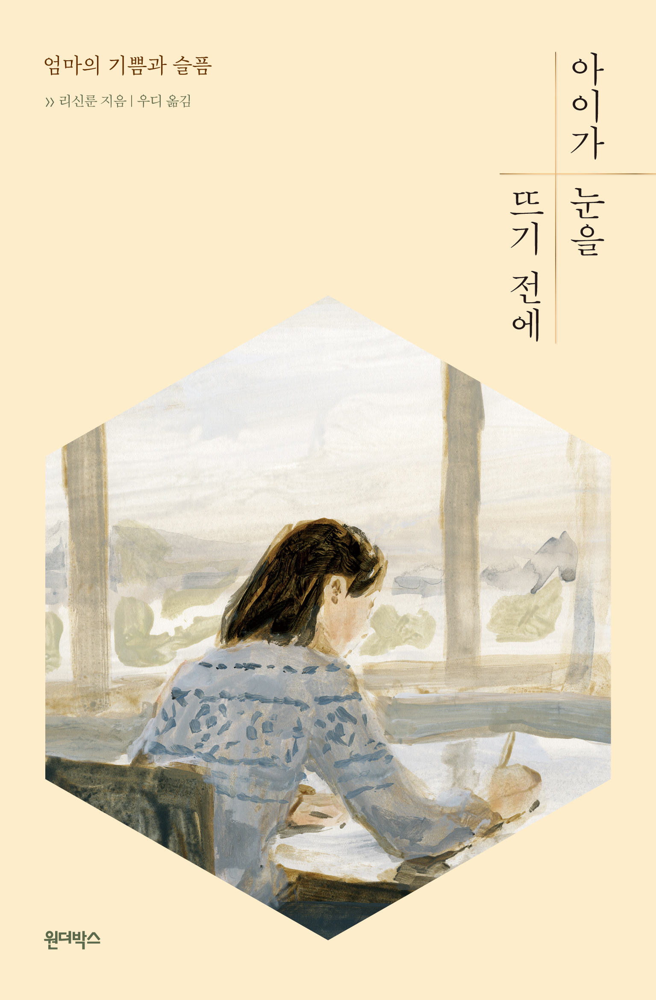
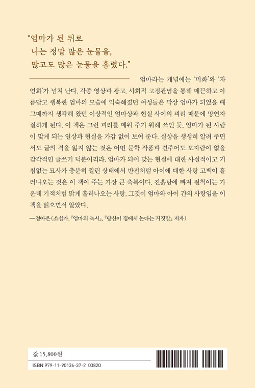

아이가 눈을 뜨기 전에
엄마의 기쁨과 슬픔
리신룬 지음 / 우디 옮김


2021.01.25. 출간 / 328쪽 / 130*198mm / 무선 / 에세이
2018 타이베이국제도서전 비소설 부문 최우수상 수상작
소설가 정아은 추천 도서
한 생명이 태어나 자라는 이면에 감춰진
숱한 모순과 좌절, 자기혐오, 그리고 그 사이에서 새어 나오는
한없이 투명한 눈물과 웃음에 관한 이야기
이 책은 ‘엄마 되기’에 관한 이야기다. 모든 여자가 엄마가 되는 것은 아니지만, 모든 사람에게는 엄마가 있다. 아이가 저절로 생겨난 것이 아니듯 엄마 역시 그냥 되는 것이 아니다. 하지만 여전히 사회는 그 과정에 무지하다. 『아이가 눈을 뜨기 전에』는 타이완의 문학 교수 리신룬의 에세이로, 저자 본인이 두 아이의 엄마가 되는 과정을 세밀하고 사실적으로 묘사하고 있다.
그 지난하고 고단한 여정은 결혼식 당일 화려하게 차려입은 자신의 낯선 몸을 들여다보는 것으로 시작한다. 이후 임신 중 몸의 경험과 분만 과정에서 몸의 감각을 사실적으로 기록한 1장, 아이를 기르며 벌어지는 일을 마치 단편 영화를 보는 듯 생생하게 그려 낸 2장을 거쳐, 펄펄 끓는 물에 화상을 입어 입원한 아이를 돌본 경험을 절절하게 적어 내려간 3장, 아이를 낳은 뒤 자신의 엄마에 대해 곱씹어 보는 4장까지, 한 여성이 결혼과 임신, 출산, 육아의 여정을 거치며 경험한 몸의 감각은 물론 변화무쌍한 감정까지 오롯이 담아냈다.
단언하기 힘든 그 혼란스러운 현실과 이런 현실을 살아가는 이의 복잡미묘한 감정을 충실히 담아낸 이 작품은 아이로 인해 울고 웃어 본 이들에게는 통점을 살살 어루만져 주는 위로를, 작가와 다른 삶을 사는 사람들에게는 공감의 지평이 확장되는 기회를 선사할 것이다.